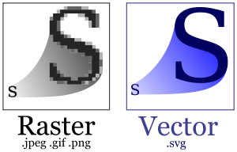

2012-2013-1, Beadandó feladat
Beadási határidő: 2011. november 8. (a szünet utáni hét, ellenőrzés a gyakorlat alatt)
Amennyiben bármi kérdés merül fel a feladattal kapcsolatban, e-mailben keressetek a leriaat@elte.hu címen!
Készítsünk egy egyszerű alkalmazást, beolvasott sorok alapján képes SVG képek előállítására!

Az SVG (Simple Vector Graphics) egy népszerű vektorgrafikus képformátum, amelyet a különböző modern böngészők is előszeretettel támogatnak.
Egy példa SVG fájl így néz ki, amelyet a programnak ki kell írnia a képernyőre:
<svg xmlns="http://www.w3.org/2000/svg" version="1.1">
<circle cx="50" cy="50" r="50"/>
</svg>
Az SVG formátumról részletesen a W3C oldalán található tutorialban találtok információkat.
A programot a következő egyetlen utasítással lehessen futtatni:
$ java svgcreator.Main test.input >test.svg
Itt svgcreator.Main a futtatni kívánt osztály neve, ez tartalmazza a main() metódust.
A program egyetlen parancssori argumentumot használjon, amely egy input fájl neve legyen (ennek mikéntjéről alább találtok bővebb információkat), a >test.svg pedig operációsrendszer szintű utasítás (Windowson, Linuxon, MacOS-en egyaránt működik), amely a program egész standard kimenetét (amit a System.out csatornára ír) átirányítja a megadott fájlba. Ezt a fájlt aztán egy megfelelő alkalmazással (pl. egy tetszőleges böngészővel) meg is lehet tekinteni.
Egy fájl beolvasásához a következő függvényt használjátok, amely visszaadja a megadott fájl sorait (kivéve az elsőt, az mondja meg, hány elemre kell számítani):
import java.io.*;
...
public static String[] readAllFileLines(final String fileName) {
try {
final BufferedReader br = new BufferedReader( new FileReader( fileName ) );
final int n = Integer.parseInt( br.readLine() );
final String[] ret = new String[n];
for (int i = 0; i < n; ++i) {
ret[i] = br.readLine();
}
br.close();
return ret;
} catch (final IOException e) {
throw new RuntimeException( e );
}
}
Nota bene Java 7 alatt az egész egyetlen sor lenne, azonban a Mac-es laborban sajnos ez nem áll rendelkezésre, így a bemutatás problémás volna.
Az adatszerkezeteket reprezentáló osztályok kerüljenek egy svgcreator.data csomagba.
A programnak csak minimális SVG támogatást kell nyújtania, amely a következő objektumokat támogatja (minden értéket kezelj egyszerű int számként).
Hozdd létre a következő osztályokat, amelyek az alábbi adattagokkal rendelkeznek.
Circle: adott az x, y koordinátája, valamint a sugara, rLine: adott a két végpontja, x1, y1, valamint x2, y2 koordinátákkalRect: adott a bal felső sarkának x, y koordinátája, valamint a hossza (width), és magassága (height)Minden adatszerkezethez készíts konstruktorokat, amelyek beállítanak minden adattagot.
Készíts továbbá egy SvgElement nevű ősosztályt, amelynek egyetlen adattagja van, egy String style. Minden adatszerkezet (a kör, téglalap és vonal is)
származzon ebből az ostzályból. A stílus adattag egyszerű CSS definíciókkal megadja az alakzat kinézetét.
Valósítsd meg a toString() metódusokat, amelyek segítségével minden adatszerkezet legyen képes megadni a saját SVG definícióját. Ennek a formátumára példák az alábbiak:
<line x1="..." y1="..." x2="..." y2="..." style="..."/>
<circle cx="..." cy="..." r="..." style="..."/>
<rect x="..." y="..." width="..." height="..." style="..."/>
ahol a pontok helyére az tárolt adattagok értékei kerüljenek.
A program bemenete soronként a következőkhöz hasonló definíciókat tartalmaz:
3
line <stilus> 50 50 200 200
circle <stilus> 50 50 50
rect <stilus> 200 200 300 100
Az input első sora mindig egy szám, amely megmondja, hány adat várható még. A program pontosan ennyi sort olvasson. A bemenet hibakezelésével nem kell foglalkoznod.
Egy példafájl itt található: test.in
Minden sor beolvasásakor szedd szét azokat szavakra (pl. egy split(" ") utasítással, amely egy tömbben visszaadja a szóközökkel határolt területet).
Ezután ha az első elem:
"line", készíts egy Line objektumot a megadott paraméterekkel (ezek az input sorban rendben a stílus, mint string, valamint, az x1, y1, x2 és y2 koordináták)"circle", készíts egy Circle objektumot a megadott paraméterekkel (ezek az input sorban rendben a stílus, mint string, valamint, a cx, cy koordináták és az r sugár)"rect", készíts egy Rect objektumot a megadott paraméterekkel (ezek az input sorban rendben a stílus, mint string, valamint, az x, y koordináták és a width, height értékek)Amennyiben a megadott stílus értéke "-", akkor használd helyette a következő Stringet: "fill:red;stroke:black;stroke-width:2".
A program feldolgozás előtt írja ki a képernyőre az alábbi fejlécet (ez mindig így néz ki, minden SVG fájl esetében):
<svg xmlns="http://www.w3.org/2000/svg" version="1.1">
valamint az elemek feldolgozása után írja ki az alábbi láblécet:
</svg>
Az alább néhány kisebb tesztfájlt találtok:
super() konstruktor hívással a konkrét adatszerkezetekben? SvgElement), át tudod-e írni úgy a programot, hogy a feldolgozás során egy tömbbe gyűjti az adatokat, és miután az összes elemet feldolgozta, egy külön függvény végzi a program outputjának előállítását? Így lényegesen áttekinthetőbb lesz a kód.